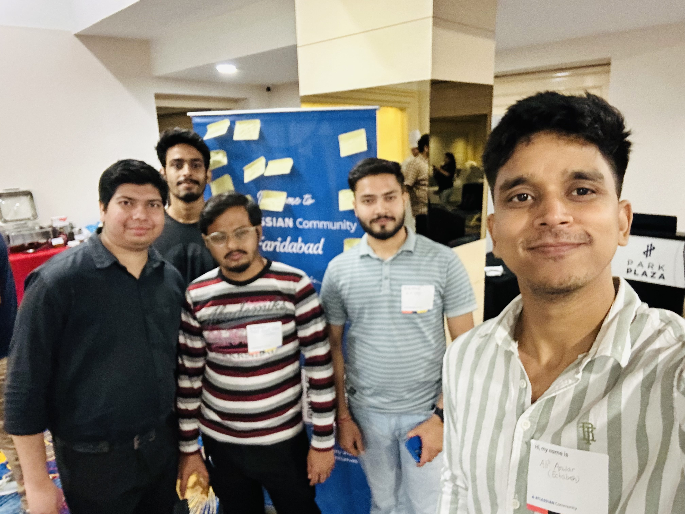
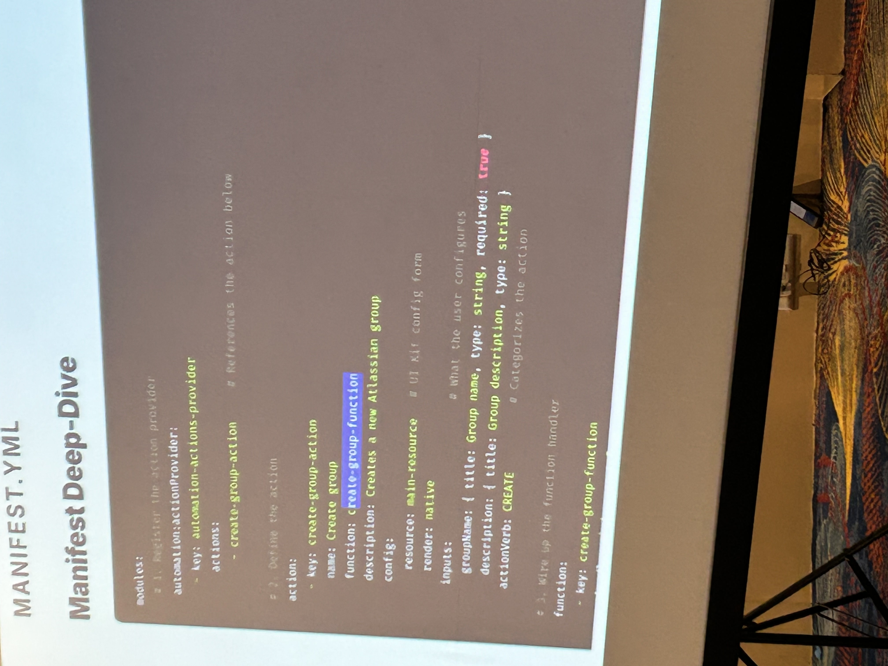
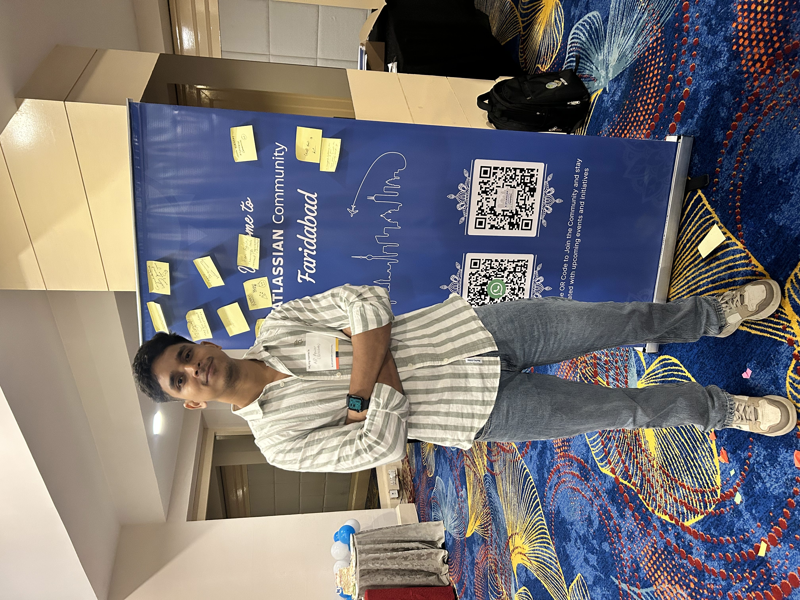

Atlassian Community Event 2026
Overview
A community-driven Atlassian event focused on platform extensibility and developer productivity. The highlight was a hands-on technical session by Akash Singh on Atlassian Forge — covering both a YAML config walkthrough and a live Forge app demo — followed by a discussion on where Rovo is headed. Good conversations with practitioners actually shipping things on Atlassian's stack.
Extending Automation with Forge
The session opened with a clear diagnosis: native Jira automation breaks down fast in real engineering environments. Forge is the answer — shifting from configuration to proper programming with versioned, auditable logic.
Complex Decision Trees
Multi-condition branching logic becomes unreadable and unauditable fast.
Repetitive Changes
No abstraction — the same logic copy-pasted across dozens of rules.
Secrets in Plain Text
API tokens embedded in rules — no vault, no scoping, no rotation.
Hard-to-Maintain JQL
Unversioned JQL strings break silently when project structures change.
No Error Handling
Without try/catch, automation failures are silent. No retry logic, no structured exception surfacing.
Forge also ships with first-class third-party API calling — letting automations reach external services and open-source tooling directly, without routing everything through Atlassian-native constructs. Exactly the kind of open extensibility that makes a platform worth building on.
Rovo: AI-Augmented Team Knowledge
Rovo was covered as Atlassian's AI layer for knowledge discovery — not a chatbot layer, but an agent that surfaces relevant decisions and links institutional context to active work. For teams living in Jira and Confluence, the pairing with Forge's programmatic automation is a natural next step worth watching.
Gallery


